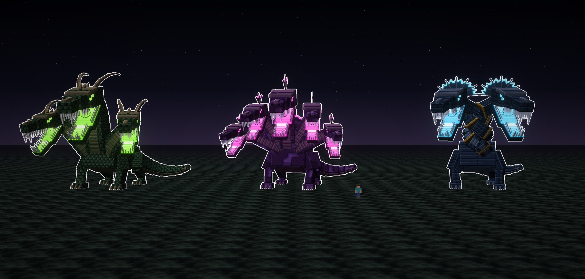
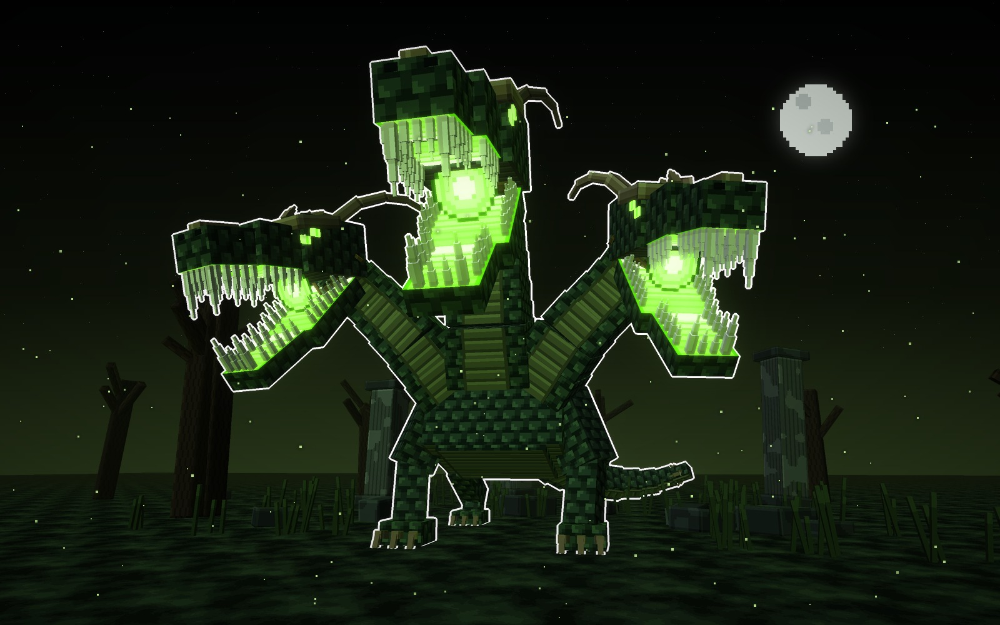
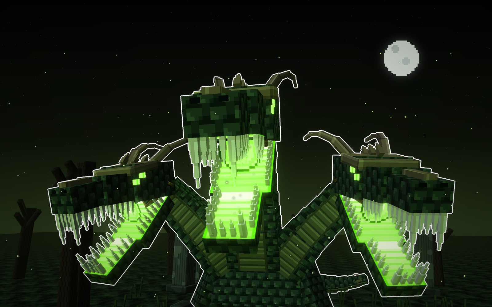
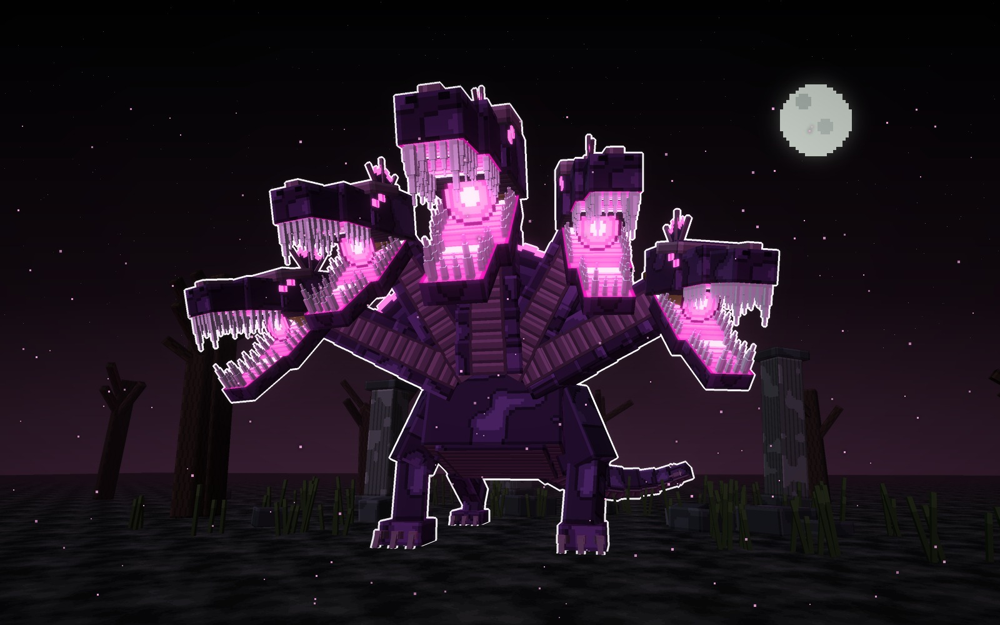
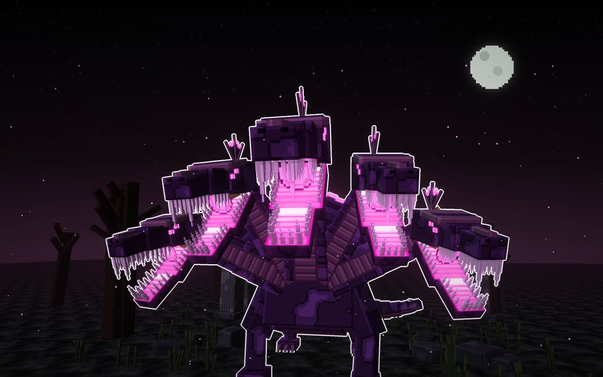
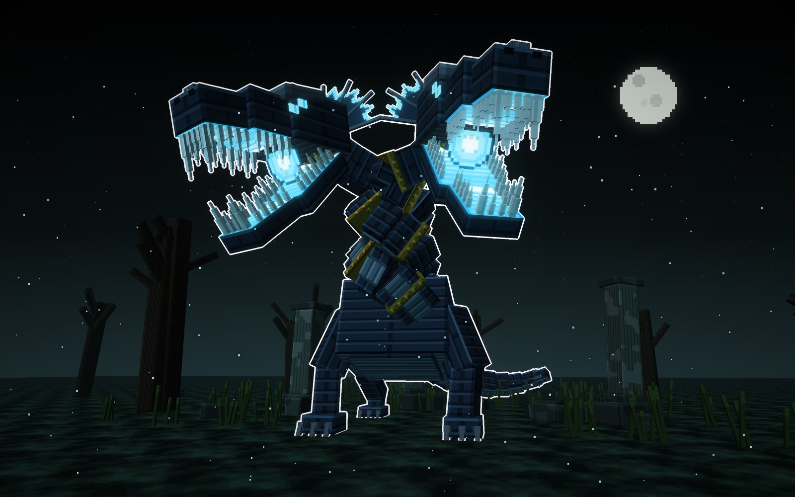
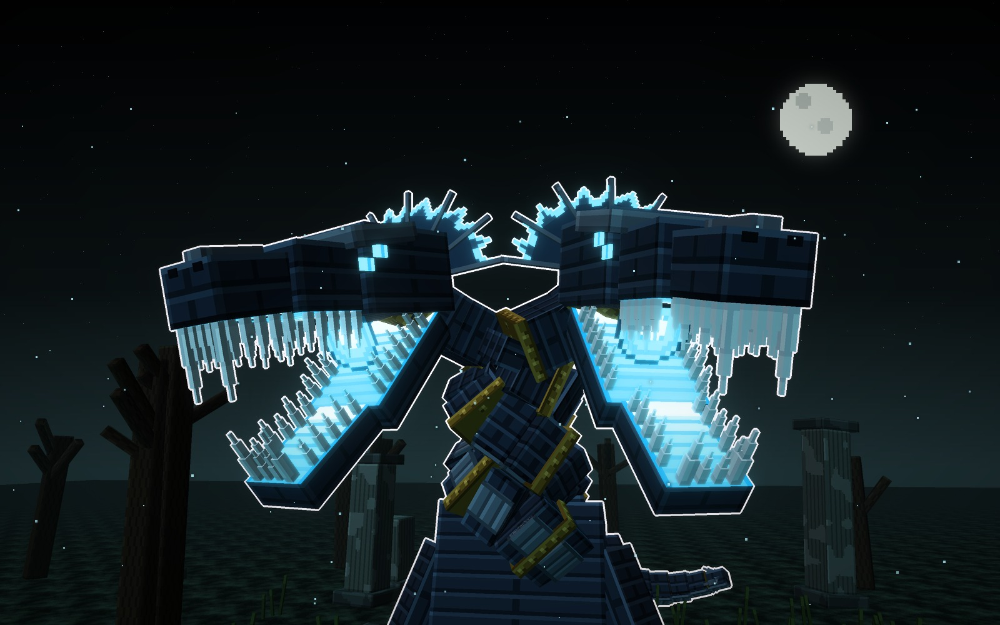
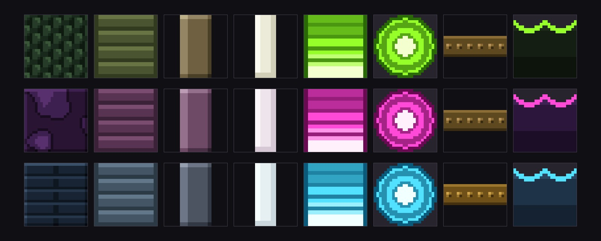

Esta vez, un monstruo y no un animal: una hidra con varias cabezas, todas con las fauces encendidas. Sus tres variantes cambian de forma, no solo de color: tres cabezas en abanico, cinco cabezas unidas por una membrana y dos cuellos trenzados.
| Variante | Cuellos | Corona | Piel | Neón |
|---|---|---|---|---|
| A | tres en abanico, el del centro más alto | dos cuernos hacia atrás y púas | escamas verde negro | verde |
| B | cinco en abanico, unidos por una membrana | una cresta de aleta | lisa, con manchas | magenta |
| C | dos trenzados como una soga | una capucha de varillas | placas en bandas y anillos de bronce | cian |
La hidra de siempre. Tres cuellos en abanico: el del centro, más alto y más gordo, con la cabeza más grande; los de los lados se abren hacia fuera. Cada cabeza lleva dos cuernos que se van hacia atrás y púas por la frente.


En peleacada cabeza ataca por su lado; si le cortas una, las otras dos se enfurecen.
Cinco cuellos abiertos en abanico y unidos por una membrana, que se abre detrás de las cabezas como una capucha. La membrana es oscura y su borde se enciende entre cabeza y cabeza. La piel es lisa, como de anguila, con manchas grandes.


En peleaabre la capucha antes del golpe grande; mientras la tiene abierta, el borde encendido avisa.
Dos cuellos trenzados como una soga, ceñidos por anillos de bronce, que arriba se abren en dos cabezas grandes. Cada cabeza lleva detrás una capucha de varillas con el borde encendido. La piel es de placas en bandas.


En pelealas dos cabezas se turnan: mientras una muerde, la otra carga su aliento.
Las tres juntas, con la misma luz y un jugador delante (1,8 bloques). Miden unos 20 bloques de alto con las cabezas, 30 de largo con la cola y 18 a 21 de ancho. Se distinguen de lejos por la silueta: un tridente, una corona y una columna que se parte en dos.
Las texturas de cada variante a píxel grande: la piel, el vientre, el hueso, los dientes, el interior de las fauces, el núcleo de la garganta, el bronce de los collares y la membrana con su borde encendido.

La guardó (12-10-2026): «deja también en fichas este monstruo con sus variables». Es el primero cuyas variantes cambian de forma y no solo de color.
Bocetos: materiales/generadores/lernara_modelo.py y lernara_escenas.py.